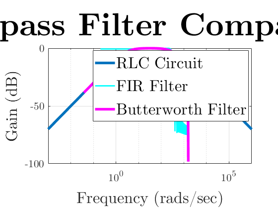

Contents
clear all; close all; clc;
set (0, 'defaultAxesFontName', 'CMU Serif')
set (0, 'defaultTextFontName', 'CMU Serif')
RLC Circuit
whigh = 50*2* pi;
wlow = 0.5*2*pi;
alpha = (whigh - wlow)/2;
w0 = sqrt(((whigh +wlow)/2)^2-alpha^2);
close all;
omegas = logspace(-3,6,100);
gain = abs((2*alpha.*omegas*i)./((i.*omegas).^2+2*alpha.*omegas*i+w0^2));
semilogx(omegas,20*log10(gain), 'linewidth', 4)
set(gca, 'fontsize', 16);
ylabel("Gain (dB)", 'fontsize', 24); xlabel("Frequency (rads/sec)", 'fontsize', 24);
title("Bandpass Filter Comparisons", 'fontsize' , 48);
grid on;
hold on;

FIR Filter
tlim = (3*pi)/alpha;
fs = 500;
ts = 1/fs;
t = -tlim:ts:tlim-ts;
t(t == 0) = 1e-9;
filter = (cos((wlow+whigh)/2 *t).*sin(alpha*t).*(0.54+0.46*cos(alpha/3 * t)))./(pi*t);
nlen = length(filter);
fftdomain = (-nlen/2:1/256:nlen/2)*(fs/nlen)*2*pi;
fft_FIR = fftshift(abs(fft(filter)));
gain = max(fft_FIR);
filter = filter/gain;
semilogx(fftdomain, db(abs(fftshift(fft(filter, 15361)))), 'c', 'linewidth', 2)
grid on;
nyq = fs*pi;
[b,a] = butter(1, [wlow/nyq, whigh/nyq]);
[h f] = freqz(b,a, 40960, fs*2*pi);
semilogx(f, db(h), 'm', 'linewidth', 4);
legend("RLC Circuit", "FIR Filter", "Butterworth Filter", 'location', 'best', 'fontsize', 24);
xlim([min(omegas), max(omegas)]);
